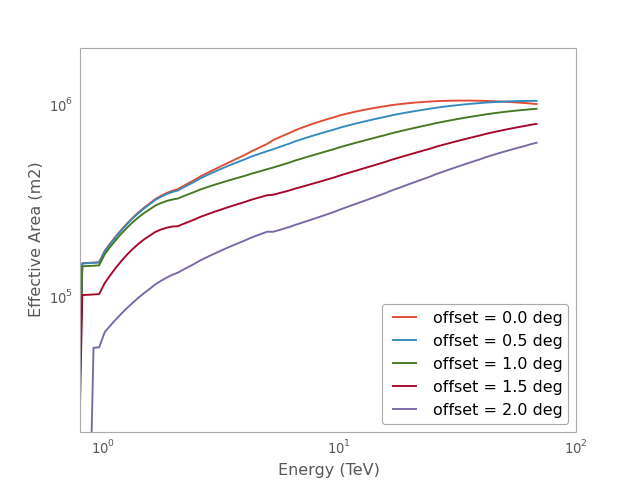

EffectiveAreaTable2D¶
-
class
gammapy.irf.EffectiveAreaTable2D(energ_lo, energ_hi, offset_lo, offset_hi, eff_area, eff_area_reco, method='linear')[source]¶ Bases:
objectOffset-dependent radially-symmetric table effective area.
Two interpolation methods area available:
LinearNDInterpolator(default)RectBivariateSpline
Equivalent to GammaLib/ctools``GCTAAeff2D FITS`` format
Parameters: energ_lo :
QuantityLower energy bin edges vector
energ_hi :
QuantityUpper energy bin edges vector
offset_lo :
AngleLower offset bin edges vector
offset_hi :
AngleUpper offset bin edges vector
eff_area :
QuantityEffective area vector (true energy)
eff_area_reco :
QuantityEffective area vector (reconstructed energy)
method : str
Interpolation method
Examples
Get effective area vs. energy for a given offset and energy binning:
import numpy as np from astropy.coordinates import Angle from astropy.units import Quantity from gammapy.irf import EffectiveAreaTable2D from gammapy.datasets import load_aeff2D_fits_table aeff2D = EffectiveAreaTable2D.from_fits(load_aeff2D_fits_table()) offset = Angle(0.6, 'degree') energy = Quantity(np.logspace(0, 1, 60), 'TeV') eff_area = aeff2D.evaluate(offset, energy)
Create ARF fits file for a given offest and energy binning:
import numpy as np from astropy.coordinates import Angle from astropy.units import Quantity from gammapy.irf import EffectiveAreaTable2D from gammapy.spectrum import energy_bounds_equal_log_spacing from gammapy.datasets import load_aeff2D_fits_table aeff2D = EffectiveAreaTable2D.from_fits(load_aeff2D_fits_table()) offset = Angle(0.43, 'degree') nbins = 50 energy = energy_bounds_equal_log_spacing(Quantity((1,10), 'TeV'), nbins) energ_lo = energy[:-1] energ_hi = energy[1:] arf_table = aeff2D.to_effective_area_table(offset, energ_lo, energ_hi) arf_table.write('arf.fits')
Plot energy dependence
import matplotlib.pyplot as plt from gammapy.irf import EffectiveAreaTable2D from gammapy.datasets import load_aeff2D_fits_table aeff2D = EffectiveAreaTable2D.from_fits(load_aeff2D_fits_table()) aeff2D.plot_energy_dependence() plt.loglog() plt.xlim(0.8, 100) plt.ylim(2E4, 2E6)
(Source code, png, hires.png, pdf)
Methods Summary
Methods Documentation
-
evaluate(offset=None, energy=None)[source]¶ Evaluate effective area for a given energy and offset.
If a parameter is not given, the nodes from the FITS table are used. 2D input arrays are not supported yet.
Parameters: offset :
Angleoffset
energy :
Quantityenergy
Returns: eff_area :
QuantityEffective Area
-
classmethod
from_fits(hdu_list)[source]¶ Create
EffectiveAreaTable2DfromGCTAAeff2Dformat HDU list.Parameters: hdu_list :
HDUListHDU list with
EFFECTIVE AREAextension.
-
plot_energy_dependence(ax=None, offset=None, energy=None, **kwargs)[source]¶ Plot effective area versus energy for a given offset.
-
plot_offset_dependence(ax=None, offset=None, energy=None, **kwargs)[source]¶ Plot effective area versus offset for a given energy
-
classmethod
read(filename)[source]¶ Create
EffectiveAreaTable2DfromGCTAAeff2Dformat FITS file.Parameters: filename : str
File name
-
to_effective_area_table(offset, energy_lo=None, energy_hi=None)[source]¶ Evaluate at a given offset and return effective area table.
The energy thresholds in the effective area table object are not set. If the effective area table is intended to be used for spectral analysis, the final energy binning should be given here, since the effective area table class does no interpolation.
Parameters: offset :
Angleoffset
energy_lo, energy_hi :
QuantityEnergy lower and upper bounds array
Returns: eff_area_table :
EffectiveAreaTableEffective area table
{kind=link}
{kind=link}